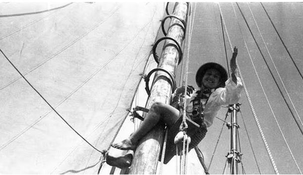
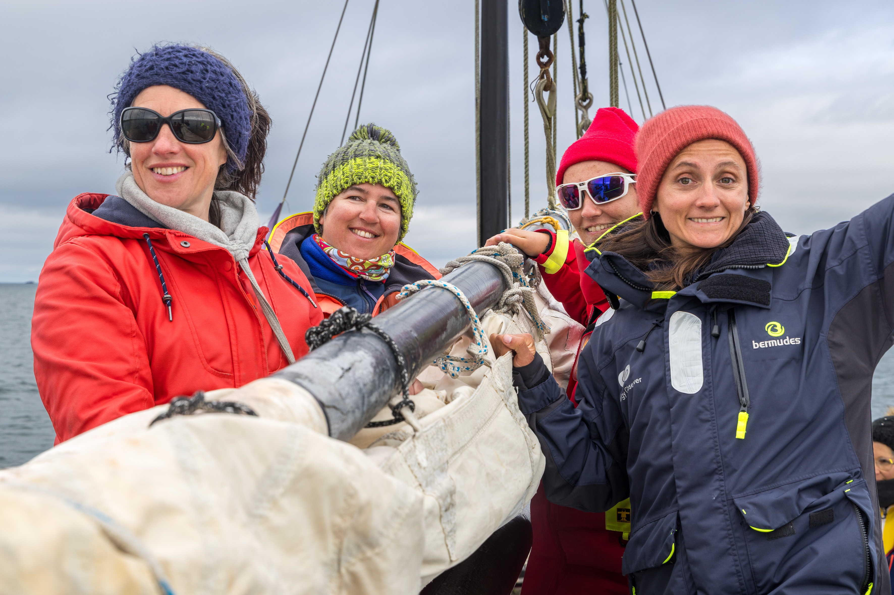
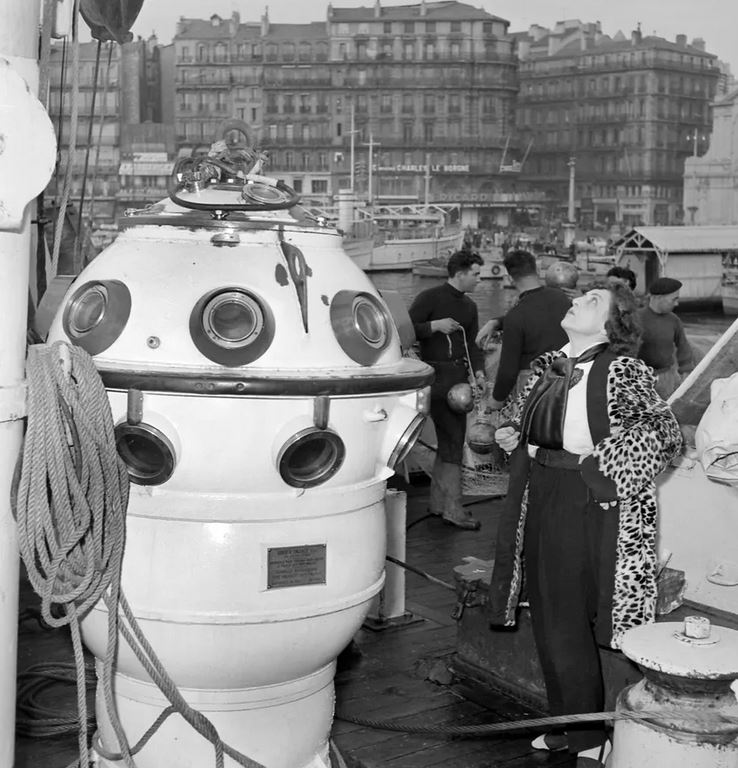

Notre projet : Un équipage féminin part en mer, de la Bretagne jusqu'à la Norvège, de mars à septembre 2026, sur les traces d'Anita Conti, la “Dame de la Mer”, pour partager le point de
vue des pêcheurs sur l'évolution de leur métier et de la ressource halieutique.
Notre intention : Questionner l'avenir du métier au regard des enjeux sociaux et environnementaux actuels et faire résonner la pensée d'Anita avec notre époque.
Embarquez avec nous !
"À la rencontre de pêcheurs dans le sillage d'Anita Conti"

“Qui sont ces hommes, qui vivent au large dans des conditions de vie si difficiles ?
Comment ces hommes racontent le monde ? Ils nourrissent les terriens et pourtant on ne sait rien d'eux...”
Anita Conti
Anita Conti
De mars à septembre 2026, Céline, Pauline, Émilie, May et Mélanie prendront la mer à la rencontre de pêcheurs depuis Lorient jusqu'en Norvège pour partager le point de vue des pêcheurs sur l'évolution de leur métier et de la ressource halieutique.
Nous embarquerons à bord du voilier "La Rêveuse", une coque acier de 40 pieds mise à disposition par l'association Passe Coque.
Pour plus d'informations, vous trouverez ici le lien de présentation du projet.
Nous embarquerons à bord du voilier "La Rêveuse", une coque acier de 40 pieds mise à disposition par l'association Passe Coque.
Pour plus d'informations, vous trouverez ici le lien de présentation du projet.



Anita Conti, entourée de Catherine Chabaud et de Paul Vatine.